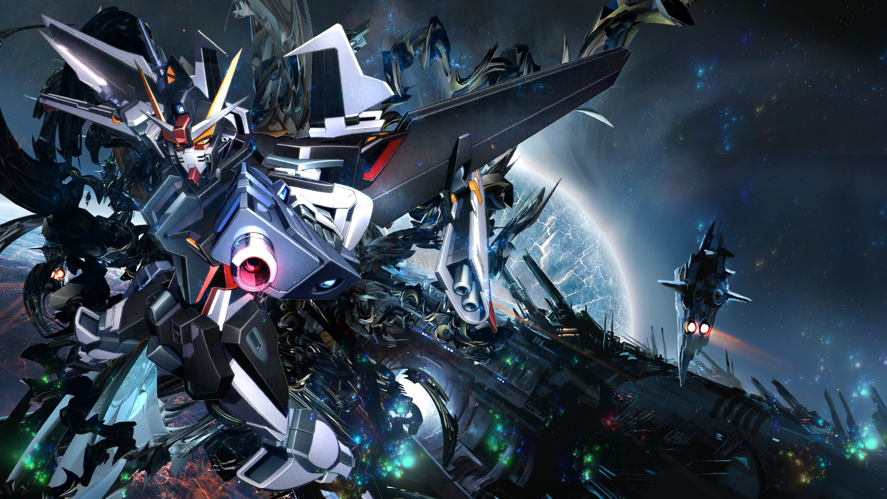

About
Saya Lahir pada 17 Agustus 2003 di Subang. Saya biasa dipanggil mr, emer, mer, mekel. Hobi saya adalah menonton film drakor dan anime. Keseharian saya hanya bangun belajar nonton makan.
Mahluk yang hidup yang suka berbagi informasi dengan orang lain dan suka menolong orang lain.
Saya Lahir pada 17 Agustus 2003 di Subang. Saya biasa dipanggil mr, emer, mer, mekel. Hobi saya adalah menonton film drakor dan anime. Keseharian saya hanya bangun belajar nonton makan.

Pada 2018 saya tamat SMP di PahTsung Yaitu sekolah tetangga kita. Pada 2015 saya tamat sd di Tzu Chi yaitu sekolah saya sekarang.

Skill yang saya punyai adalah mengedit video dan foot fotografi dan videografi dan sedang tahap menjadi seorang programer